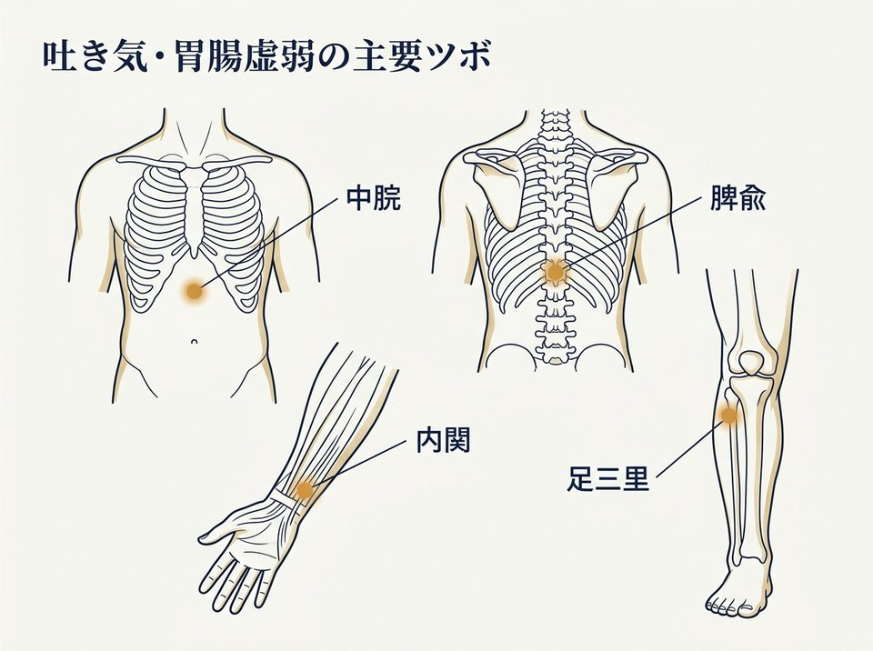

ダンピング症候群の鍼灸
胃切除後に食物が小腸へ急激に流入して起こる症候群。主治医の食事指導と並行し自律神経・疲労感をケアします。


院長YouTube解説・関連動画
ダンピング症候群の症状は全身の倦怠感や動悸、頭痛など様々
ダンピング症候群の症状は、早期か後期かによって若干異なります。
早期ダンピング症候群の場合、食後の全身の倦怠感や冷汗、動悸や顔面蒼白、顔面の紅潮、腹痛、腹鳴、吐き気や嘔吐、下痢などです。
後期ダンピング症候群の場合、15～20分発汗が続いたり、頻脈や頭痛、めまいが起こったり、手足のふるえや脱力、倦怠感が起こったりします。
ダンピング症候群の対策方法は、1回の食事の量を少なくし、ゆっくりと時間をかけて何回かに分けて食べることです。
デンプンや糖分などは消化が良いため、糖質の摂取を控えて食事をしているときは水分を控えめにゆっくり食べるように気をつけることが大切です。
後期ダンピング症候群は、腸管からの糖質の吸収によって血糖値が急激に高くなることで、インスリンが過剰に分泌されて起こる反応性低血糖であると考えられています。
そのため、改善方法は適度に糖質を補うことです。食事をした後2時間くらいに糖質を含む間食をとることや外出した時に菓子類を持っておくことをお勧めします。
ダンピング症候群が起こった時は、食事を工夫することが大切です。よくかんで唾液と混ぜ合わせて口の中で粥状にしてから飲み込むことを心がけましょう。
症状を予防するためには高たんぱく、低脂肪、低炭水化物の食事がおすすめです。食事を工夫しても改善しない場合は薬などを使うことで改善することもあります。医師に相談することをお勧めします。
▼ 詳しく知りたい項目だけタップして開けます（全項目の医学解説を収録）
01. 原因とメカニズム
なぜ症状が起きるのか・鍼灸の作用機序を読む
▼
01. 原因とメカニズム
なぜ症状が起きるのか・鍼灸の作用機序を読む
手術で胃を切除したことにより胃の容量が小さくなったり、迷走神経の切除や再建経路の変化によって消化管の協調運動・ホルモン分泌に乱れが生じたりして、食べたものが急激に小腸へ流れ込むことで起こります。食後30分以内に現れる早期型と、食後2〜3時間に反応性低血糖として現れる後期型の2種類があります。
なぜ鍼灸で改善へ向かうのか？（作用機序の図解）
ダンピング症候群に対する鍼灸は、脳腸相関と迷走神経反射による胃腸運動の調整機序を通じて、お体本来の回復力を引き出します。
胃腸機能と深く結びつく四肢・腹部の経穴を刺激し、体性感覚神経から中枢へ信号を送ります。
脳幹を経由した体性-内臓反射により、副交感神経（迷走神経）経由で胃腸の働きを調整します。
弱まったぜん動を促す一方、下痢型の過剰な収縮や内臓知覚過敏は穏やかに鎮静します。
ストレスで乱れにくい胃腸の土台を整え、胃もたれ・便通異常・吐き気の軽減を目指します。
02. よくあるお悩み
このような症状はありませんか？（4項目）
▼
02. よくあるお悩み
このような症状はありませんか？（4項目）
- ✓食後30分以内にだるさ・冷や汗・動悸・腹痛が出やすい
- ✓食後2〜3時間経ってからめまい・頭痛・手足のふるえが起こる
- ✓食事を小分けにする工夫をしていても日々の疲れが溜まりやすい
- ✓胃切除後の体調変化に対する不安や自律神経の乱れを感じる
03. 当院の施術アプローチ
施術の進め方・改善のポイントを見る
▼
03. 当院の施術アプローチ
施術の進め方・改善のポイントを見る
04. ツボ詳細・セルフケア一覧
メニエール病・難治性めまい・耳鳴りのツボ図解（6穴）
▼
04. ツボ詳細・セルフケア一覧
メニエール病・難治性めまい・耳鳴りのツボ図解（6穴）
実際の施術ではお一人おひとりの体質・症状に合わせて選穴しますが、メニエール病・前庭性片頭痛・耳鳴り・難治性めまいの内耳循環ケアの臨床でよく用いられる代表的なツボの目安です。
| ツボ名 | 位置の目安 | 主な狙い | セルフケアの注意点 |
|---|---|---|---|
| 聴宮（ちょうきゅう） | 耳の穴の前、口を開けるとくぼむ場所 | 内耳周囲の微小循環改善・耳閉感や耳鳴りケア | 強く押さず口を少し開けて優しく触れます。 |
| 翳風（えいふう） | 耳たぶのすぐ後ろのくぼみ | 内耳・三叉神経・顔面周囲の血流とリンパ循環促進 | めまい発作直後は首を動かさず静かに温めます。 |
| 風池（ふうち） | 後頭部の生え際のくぼみ | 後頭下筋群の緊張緩和・椎骨動脈血流サポート | 親指で上向きに優しく支えるように押します。 |
| 完骨（かんこつ） | 耳の後ろの出っ張った骨の下後ろ | 平衡感覚の安定・睡眠の質改善 | 左右の張りを比べながら優しく緩めます。 |
| 内関（ないかん） | 手首の横ジワから指3本分肘寄りの中央 | めまいに伴う吐き気・自律神経発作の鎮静 | めまいが出そうなときのセルフ指圧にも有効です。 |
| 太衝（たいしょう） | 足の甲、親指と人差し指の骨の間 | ストレス性の内リンパ水腫悪化・イライラの緩和 | 深呼吸と合わせて3〜5秒ずつ押します。 |
05. 医学的根拠・国際査読論文（PubMed / Cochrane）
科学的エビデンス・出典リンク一覧（2件）
▼
05. 医学的根拠・国際査読論文（PubMed / Cochrane）
科学的エビデンス・出典リンク一覧（2件）
国際的な医学データベース（PubMed・Cochrane等）で報告されている過敏性腸症候群（IBS）・便秘・下痢領域の代表的な査読済み鍼灸研究をまとめています（標準治療との併用や研究上の限界を含めて正確に掲載）。
| 年・研究デザイン | 対象・規模 | 主な結果 | 限界・出典 |
|---|---|---|---|
| 2025年 多施設RCT | 下痢型過敏性腸症候群（IBS-D）280名（6病院） | 腹痛および便性状の複合レスポンダー率がシャム鍼比で有意に改善。 | 下痢型中心のデータで他病型への拡張は検証継続中。 Gastroenterology (PMID: 40441496) |
| 2016年 大規模多施設RCT | 慢性重症機能性便秘 1,075名（15病院） | 電鍼8週で週あたり完全自発排便回数がシャム鍼比で有意増加し12週持続。 | 器質的腸閉塞や炎症性腸疾患の除外が前提。 Ann Intern Med (PMID: 27618593) |
参考文献・出典
- 2025年 多施設RCT（下痢型過敏性腸症候群（IBS-D）280名（6病院））— Gastroenterology (PMID: 40441496)
- 2016年 大規模多施設RCT（慢性重症機能性便秘 1,075名（15病院））— Ann Intern Med (PMID: 27618593)
06. よくある質問（FAQ）
よくあるご質問を見る（2件）
▼
06. よくある質問（FAQ）
よくあるご質問を見る（2件）
Q. 胃の手術後どのくらいから鍼灸を受けられますか？
術後の回復状況には個人差があるため、傷口や体調が落ち着き主治医の許可が出てからご利用ください。腹部を圧迫しない体位で施術します。
Q. 食事の工夫と併用しても問題ありませんか？
はい、少量ずつゆっくり食べるなどの食事対策や医師の処方が基本となります。鍼灸はそのうえでの自律神経・疲労ケアとして併用いただけます。
あわせて読まれる関連疾患（消化器のお悩み）
椎体・肛門・気管食道・橈骨・腎の複数徴候を合併する先天性疾患。専門医管理下で筋緊張や疲労を補完します。
キノホルムによる薬害で生じた神経障害（新規発症なし）。専門医管理下で慢性期のしびれや筋緊張を補完ケアします。
飲酒が主因でない脂肪肝に炎症・線維化が加わった状態。食事と運動での減量を軸に、倦怠感や生活リズムの乱れを鍼灸で支えます。
長期の過剰飲酒で脂肪肝から肝炎・肝硬変へ進む肝障害。専門医管理と禁酒を基本に疲労や自律神経を整えます。
胃の一部が横隔膜の食道裂孔から上方へ飛び出す状態。医療機関での管理と並行し背部緊張や自律神経を整えます。
ガストリノーマによる胃酸過剰で難治性潰瘍を起こす疾患。専門医の治療を第一に、体調・自律神経を補完します。
CLINICAL RECOVERY CASES
✨ 実際の臨床改善事例・回復経過を見る
銀座本院をはじめ各院での実際の改善事例を症状別に絞り込んでご確認いただけます。
おひとりで悩まず、まずはご相談ください
銀座本院・川口・大宮・横浜・博多・田無の各院でご予約を承っております。